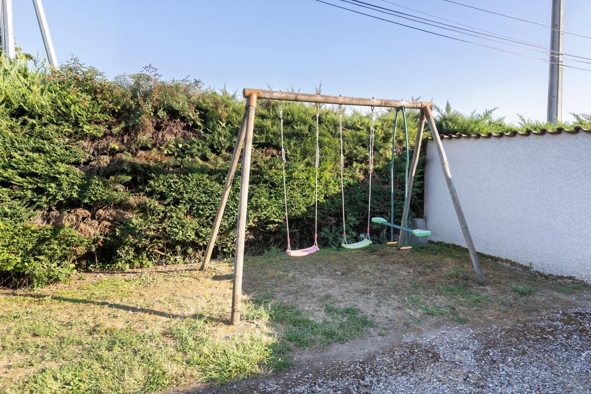
En famille
Quatre chambres, des balançoires au jardin et une cour fermée : les enfants jouent, les parents se posent.
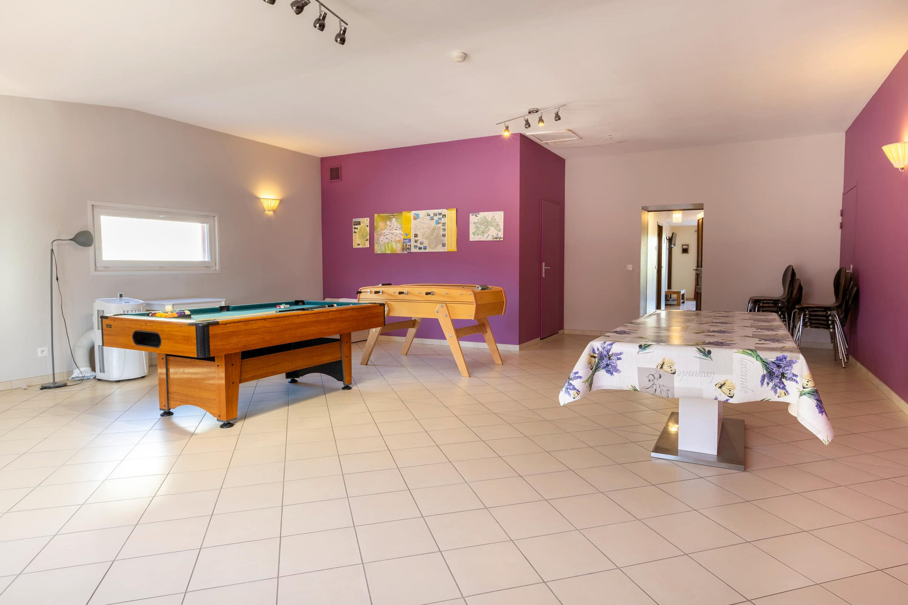
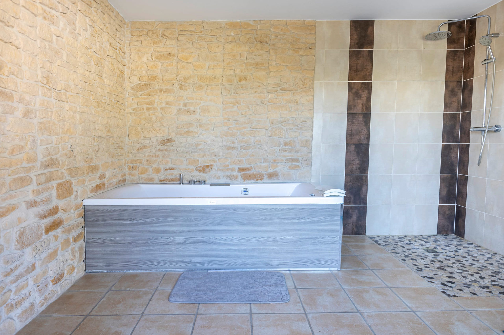
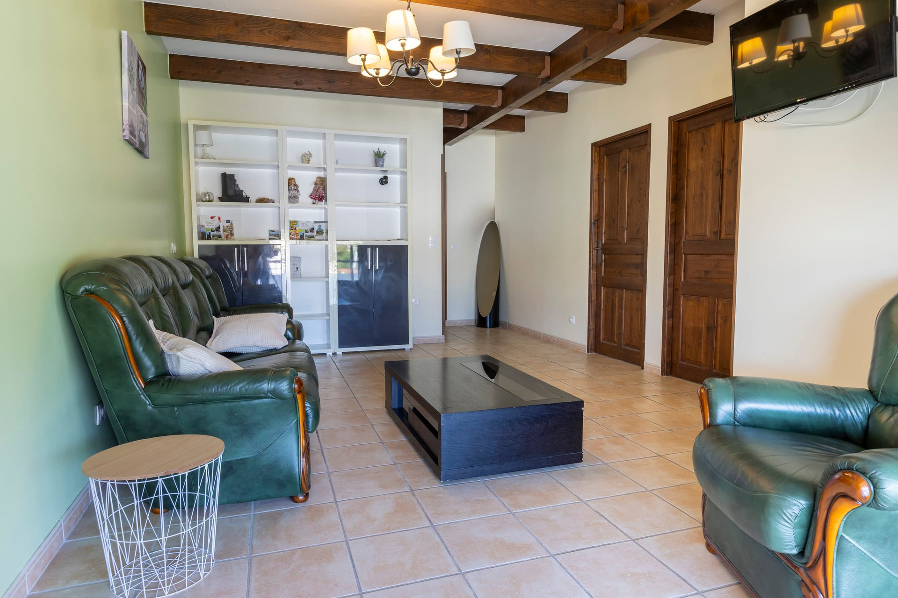
Un grand gîte de 240 m² pour 8 personnes, rien que pour vous, à Beauvoir-de-Marc : à 25 minutes de Vienne et 45 minutes de Lyon.
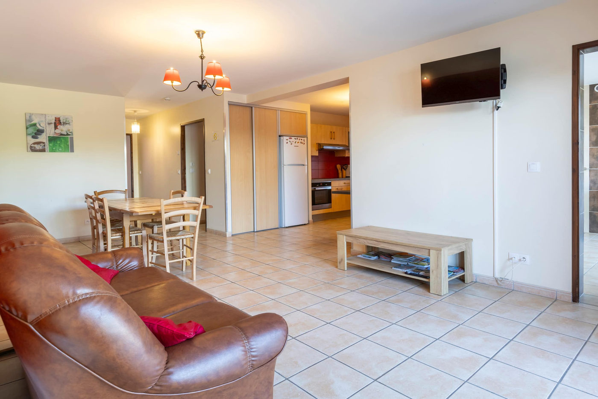
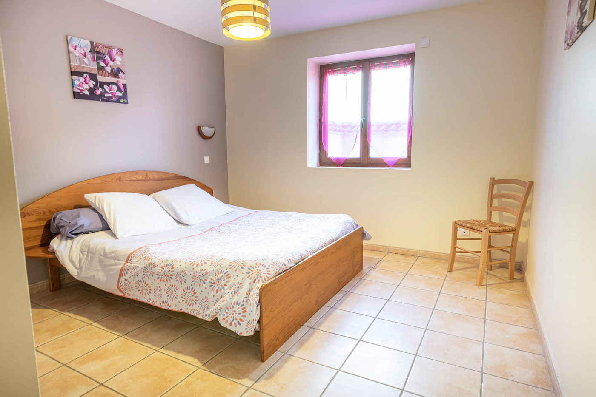
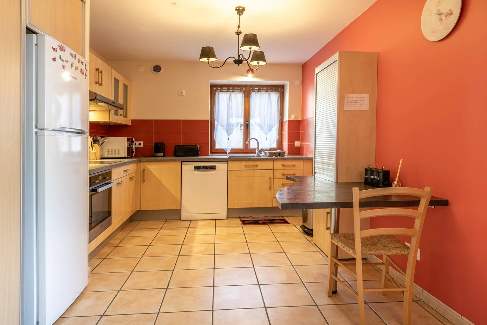
Un grand gîte de 240 m² sur deux niveaux, rien que pour vous : 4 chambres, 2 salons avec TV, une cuisine entièrement équipée et 2 salles de bain, dont une accessible aux personnes à mobilité réduite.
Dehors, une cour fermée avec 4 places de parking, une terrasse, un balcon, un jardin avec plancha et balançoires.

Quatre chambres, des balançoires au jardin et une cour fermée : les enfants jouent, les parents se posent.
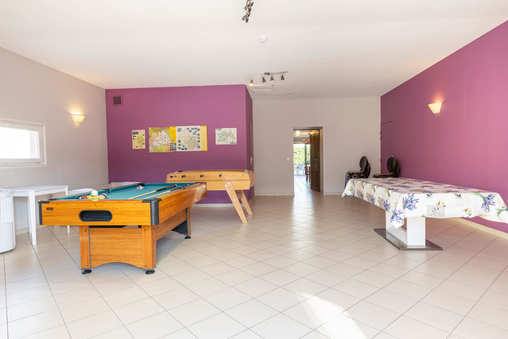
Une salle de loisirs de 60 m² avec billard et baby-foot, une grande table et la plancha pour les soirées.
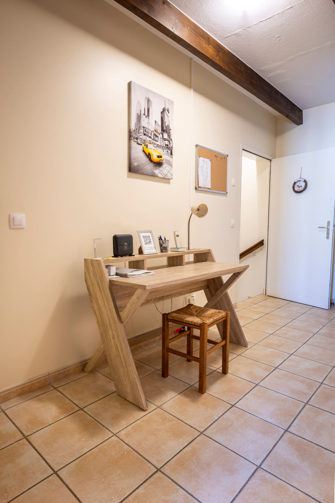
La fibre, un espace de travail et le calme : idéal pour une équipe en déplacement ou un séjour en télétravail.
Courts, moyens et longs séjours : une cuisine entièrement équipée, un lave-linge et deux salons pour s’installer.
Le gîte se loue en entier, jusqu’à 8 voyageurs. Le prix exact dépend de vos dates : choisissez-les sur le planning, le total s’affiche aussitôt, ménage et taxe de séjour compris.
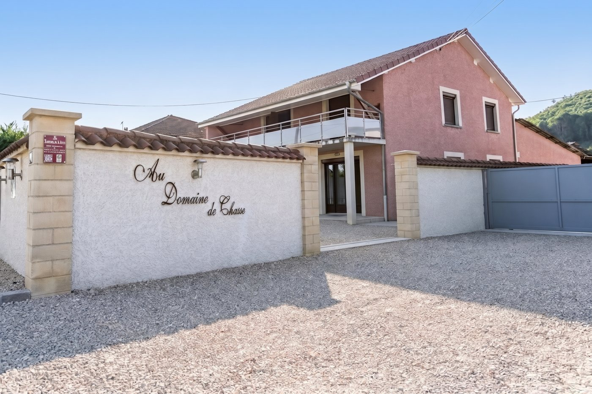
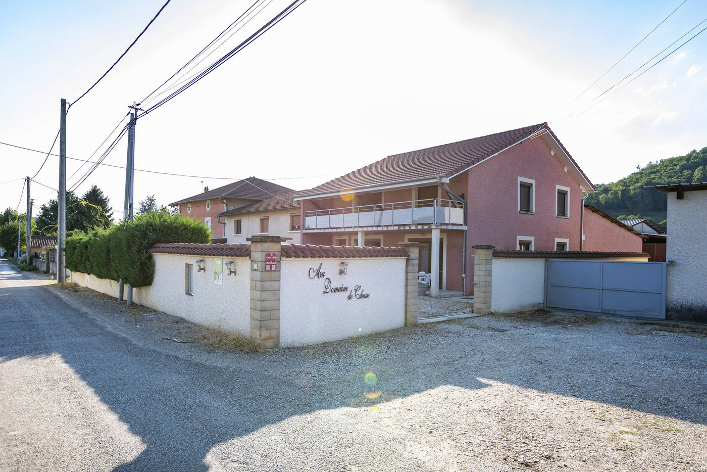
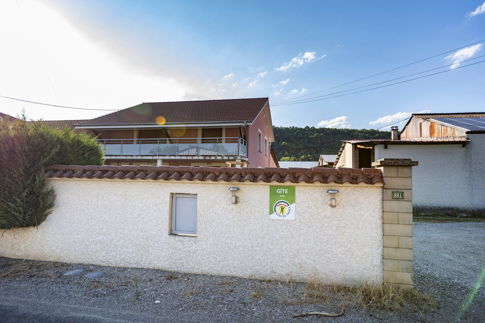
Béatrice a créé le Domaine de Chasse en 2014, après avoir repris l’exploitation agricole familiale de son père. Elle a voulu un lieu chaleureux où familles et amis se retrouvent dans un cadre paisible, tout en faisant découvrir sa région.
Les voyageurs parlent d’elle comme d’une hôte disponible, gentille et toujours prête à aider.
« Gîte spacieux et confortable avec une salle de jeux pour se divertir avec un baby et billard, un espace détente avec la baignoire balnéo, espaces verts avec barbecue. Bon accueil de la propriétaire disponible sur place. »
« Rien ne manque, pas loin de Lyon et Grenoble, le gîte est spacieux, fonctionnel et vraiment top pour les familles : grande salle des jeux, balançoire, sans oublier un grand parking privatif de 4 places ! »
« Gîte très spacieux et idéal pour une rencontre entre amis. Nous recommandons ! »
Choisissez vos dates : Béatrice vous répond elle-même.
Réservez en ligne avec le planning, ou posez votre question : la réponse arrive dans les 24 h.
« Gîte spacieux et confortable avec une salle de jeux pour se divertir avec un baby et billard, un espace détente avec la baignoire balnéo, espaces verts avec barbecue. Bon accueil de la propriétaire disponible sur place. »
Jusqu’à 8 voyageurs, dans 4 chambres : trois chambres avec un grand lit queen size et une chambre avec deux lits simples. Le gîte de 240 m² vous est entièrement réservé : aucun espace n’est partagé avec d’autres voyageurs.
En ligne, avec le bouton « Réserver » : vous choisissez vos dates sur le planning, le prix du séjour s’affiche aussitôt, ménage et taxe de séjour compris. Vous pouvez aussi appeler Béatrice au 06 52 84 21 33. Le séjour minimum est de 2 nuits.
L’arrivée est autonome à partir de 18 h, grâce à une boîte à clés sécurisée. Le départ se fait avant 10 h. Un autre horaire ? Demandez-le, on s’arrange souvent.
Oui : le linge de lit et les serviettes sont fournis, ainsi que le savon, le gel douche, le thé et le café. Le ménage de fin de séjour est fait par un professionnel (50 €).
Oui, 500 € par empreinte bancaire avant l’arrivée. Elle n’est pas débitée et elle est libérée dans les 7 jours qui suivent votre départ si aucun dommage n’est constaté.
Oui : le gîte a la fibre, un wifi stable et un espace de travail. Il accueille souvent des personnes en déplacement professionnel, pour quelques nuits ou plusieurs semaines.
Non, les animaux ne sont pas admis et le gîte est entièrement non-fumeur.